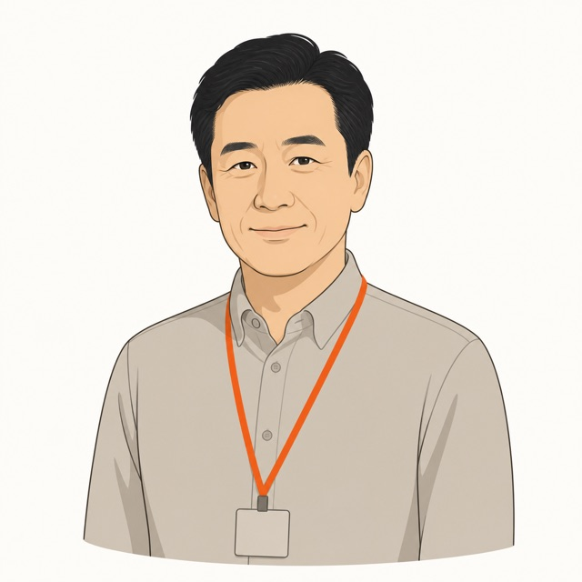

AX성과 측정 기준 없음
그런데 얼마나 일을 완수했는지는 알 수 없습니다.
어떤 업무에서 AI가 효과를 내는지 실행 데이터로 가려내면, 효과 없는 사용은 줄이고 되는 업무에 집중할 수 있습니다.

그런데 얼마나 일을 완수했는지는 알 수 없습니다.
사내 정책에 맞춰 만들었지만 처리시간이 오래 걸립니다.
비교할 실행 기록이 없어 판단하기 어렵습니다.
국내 대표 상장사 2년 공개 기록 분석에서도 효과 측정만 비어 있었습니다. 바리온랩스 연구 BL-IA-2026-03 요약본은 상담 시 제공합니다.
직원마다 다른 AI에서 회사 업무를 처리해 실행과 비용이 파편화됩니다.
온보딩, 회사 지식, 업무 생산 효과 측정을 하나의 서비스로 묶습니다.
온보딩으로 완수량을 보고 · 회사 지식으로 처리시간을 줄이고 · 측정으로 효과적인 에이전트를 가려냅니다.
프로젝트·좌석별 비용 한도를 코드로 강제해 예상하지 못한 청구를 막습니다.
업무·에이전트별로 어디에 비용이 쓰이는지 자동으로 집계합니다.
고가 모델 잠금과 사용 순서 정책으로 불필요한 남용을 막습니다.
효과가 없는 사용을 실행 데이터로 식별하고 줄입니다.
임의의 절감률을 먼저 약속하지 않습니다. 첫 실행부터 같은 기준으로 기록하고 도입 전과 후를 비교합니다.
도입 효과 리포트의 측정 틀입니다. 실제 수치는 귀사의 실행이 시작된 뒤 채워집니다.
24문항으로 현재 AI 활용 방식을 확인하고 다음 단계의 실행 기준을 잡습니다.
사내 자료를 AI에 사용하기 전 브라우저 안에서 가명처리하고 마스킹합니다.
로그인 좌석 키로 웹과 사용량을 통합하고 데스크톱까지 같은 좌석으로 연결합니다.

ROLE 01 / AX“효과 있었어?”라는 질문에 실행 데이터로 답해야 하는 분.
어디를 줄이고 어디에 집중할지 근거로 판단해야 하는 분.
교육이 실제 업무 변화로 이어졌는지 증명해야 하는 분.
데이터 분리, 비용 상한, 운영 부담을 확인해야 하는 분.
실행 데이터가 그대로 도입 효과 보고의 근거가 됩니다.
필요한 업무에는 집중하고 효과를 내지 못한 사용은 줄입니다.
잘된 실행이 기록, 문서, 다음 업무 방식으로 이어집니다.

현재 쓰는 AI와 반복 업무를 알려주시면, 위 파이프라인의 어느 단계부터 측정할지 함께 정리합니다.